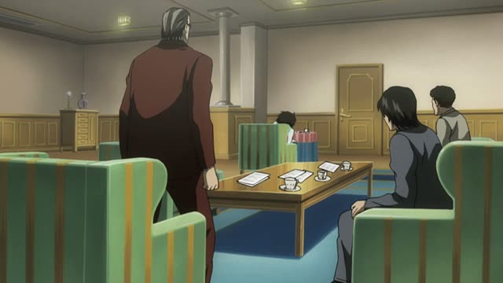
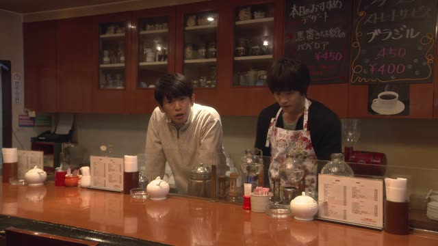
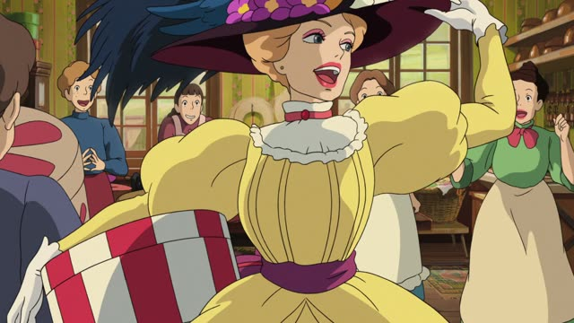

～始める・～出す
1 Litre of Tears · Episode 3
何か気づき始めてるのは分かってます。
"I know she's starting to notice something."
～始める means "start doing". Take the ます-stem and add 始める: 気づきます → 気づき始める, 食べます → 食べ始める.
On this card, Aya's mother knows her daughter is beginning to sense something about her illness. 分かってます makes it polite.
～出す also means "start", but suddenly, out of nowhere: 泣き出す (burst into tears), 言い出す (come out with), 逃げ出す (run off).
Shirokuma Cafe · Episode 25
マフラー、編み始めて３年目らしいね。
"Looks like it's been three years since he started knitting that scarf."
On this card, the sloth has a slow hobby. 編み始めて: since he started knitting.
Quick Examples
Your friend asks about your hobby.
去年からギターを習い始めました。
"I started learning guitar last year."
PoliteLooking out the window.
あ、雨が降り出した。
"Oh, it started raining."
出す: it started all of a sudden.
CasualAt dinner.
じゃあ、食べ始めましょう。
"Well, let's start eating."
PoliteYour friend's kid.
急に泣き出して、びっくりした。
"She suddenly burst into tears. I was startled."
CasualWith and without
雨が降った。
"It rained."
雨が降り出した。
"It suddenly started to rain." The moment it began.
Examples from Media

Death Note · Episode 15
そうですよ、何を言い出すんです。
"Exactly, what are you coming out with?"
言い出す = suddenly say something.

Good Morning Call · Episode 13
最近うちに通い始めたお客さんでね。
"A customer who started coming here recently."

Howl's Moving Castle
キングスベリーで流行り始めたのよ。
"It's started to be in fashion in Kingsbury."
Dungeon Meshi · Episode 14
さっき逃げ出したのがミックだろう。
"The one who ran off just now must be Mick."
逃げ出す = run away suddenly.
Samurai Champloo · Episode 13
ここから逃げ出したい。
"I want to get out of here."
Kotaro Lives Alone · Episode 9
それがきっかけで、心を開き始めたんだ。
"That's what made him start opening up."
Odd Taxi · Episode 10
じゃあ、明日にでも動き出すだろう。
"Then they'll probably make their move tomorrow."
Dungeon Meshi · Episode 16
そして周囲に散らかったゴミを食べ始める。
"Then it starts eating the trash around it."